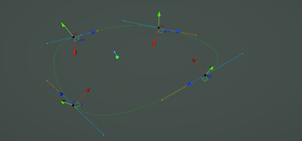
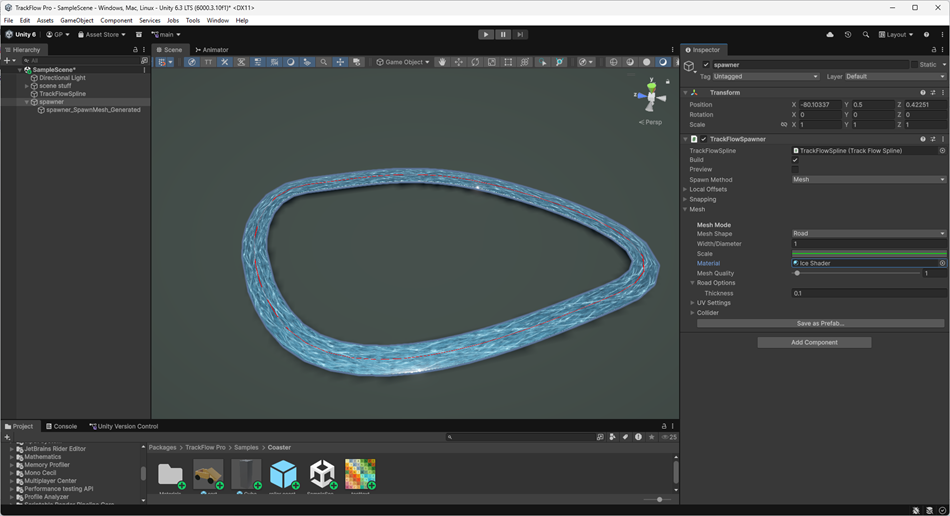
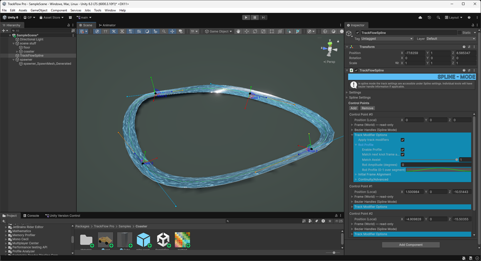
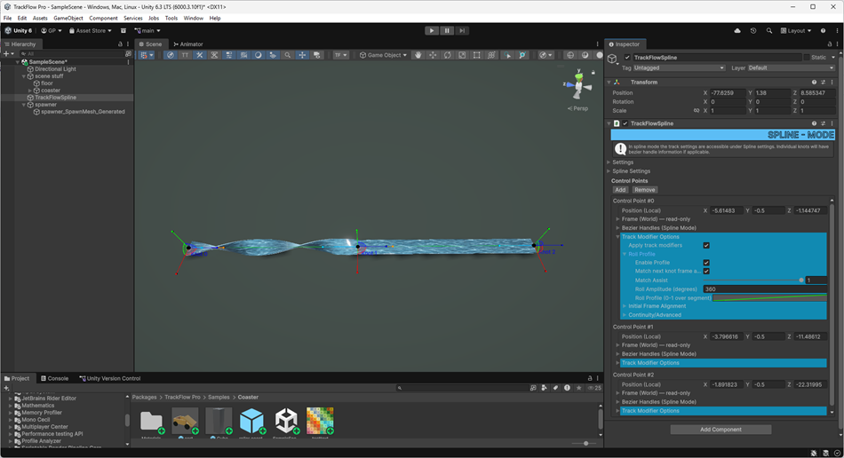

Hello, welcome to the TrackFlow Pro Unity documentation.
This page will serve as a first glance and quick start guide, so you can get up and running in Unity in less than 5 minutes. If you don't want to read about all the boring stuff about how this library works, just keep reading for a quick start guide. Otherwise head on over to Detailed Information.
Note: in this tutorial we will use the words "knot" and "control point" interchangeably. They both specifically reference the TrackFlowKnot objects that populate the TrackFlowSpline.ControlPoints array.
Installation
To install TrackFlow Pro you can import it via the package manager.
Setup
To draw your first TrackFlowSpline, click the TrackFlow button in the scene editor toolbar to enable curve drawing.

Then click and drag in the scene to place your first knot and set its frame orientation. Now click and drag somewhere else to add the second control point. You can also add knots by clicking the Add button in the TrackFlowSpline object under Control Points. This will add a knot at the local center of the gameobject. If you click Add with at least one knot already in the list, it will clone the last knot in the list and instantiate it at its location. You can drag it using the scene handles or by scrubbing the position values in the inspector. To close the curve select the spline object and click Settings > Closed.

Once you have drawn your curve, or at any point after adding the first knot, you can create an empty game object and add a TrackFlowSpawner component. Drag the spline script reference into the TrackFlowSpline property field and set the Spawn Method to Mesh. You can also set the material, by default this is null so you will get a default pink mesh.
If you cannot see your mesh generated at this point, make sure it is not obscured by scene objects, you can select the spline gameobject and click the Move Tool to move it around in the scene if you need to get a better view.

Editing the frames
Before editing the frames it's vital to ensure you can actually see the frames you are editing, since these are not just positions, but orientations in space along the curve. To view the frame data you have two options: the first is to enable Preview Frames within the TrackFlowSpline settings menu Settings > Extra > Preview Frames. Then play with the max frame indicator setting and max frame indicator density setting to choose values that don't crowd the editor. The second option is to generate a non symmetrical mesh profile along the spline, like a road shaped mesh, so you can visually see the frame roll in action. In this tutorial we will be spawning a mesh instead.
To edit the frame data of the curve ensure you have selected the spline object. To rotate the target frame at the currently selected knot, you can hold shift and click on the drag handles to rotate the knot. If you are in spline mode you can also drag the blue and orange handles which control the input and output tangents respectively.

For frame rolling options between knots, you can expand the blue Track Modifier Options button on each individual knot in the control points array (see above picture). Here you can control the roll profile along the segment, the initial frame alignment (whether or not to ignore the knot frame), and a maximum roll degree per meter setting, which can limit the frame rolling along the curve. Within the Roll Profile tab you can apply a roll using the profile animation curve and the amplitude value, which is in degrees. The values themselves are relative to the starting frame at the knot location, whatever orientation that might be.
Note to get a result like the photo below you will need to increase the polyline sampling quality AND the mesh builder quality. The former located under the TrackFlowSpline > Settings > Extra > Quality and the latter located under TrackFlowSpawner > Mesh > Mesh Quality.

Exporting the mesh
Once you are happy with your mesh, you can export it as a prefab by expanding the Mesh options (within TrackFlowSpawner) and clicking the export button at the bottom.
That's it
This was a rather simple example. To learn about other features check out the links below.